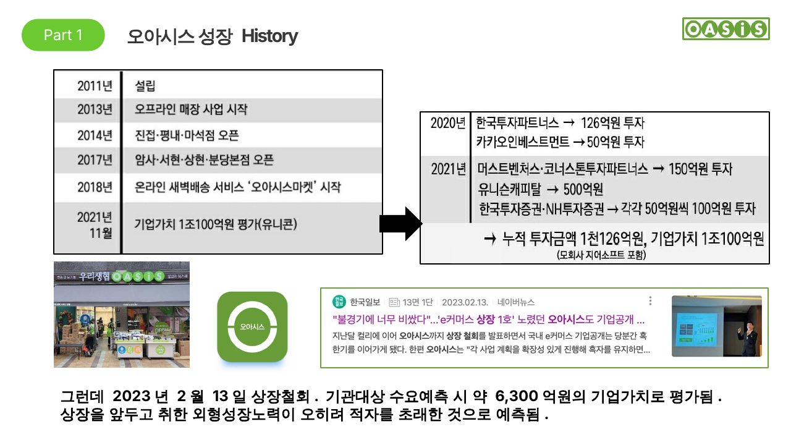
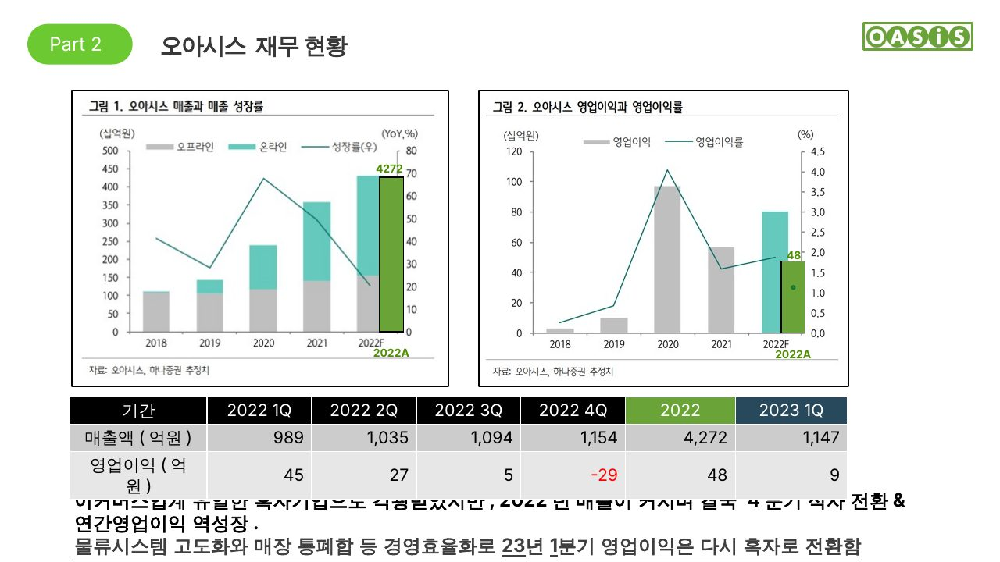

오아시스 성장 History · 재무 현황
신선식품 새벽배송 기업 오아시스의 성장 과정과 최근 실적 흐름
Part 1. 성장 History
- 2011년 우리생협 출신 경영진이 설립
- 2013년 오프라인 매장을 열고 우리생협과 정식 계약을 맺어 위탁 판매 시작 (매장 간판에 '오아시스'와 '우리생협' 병기)
- 2018년 새벽배송 서비스 '오아시스마켓' 시작
- 2021년 11월 유니콘 기업으로 평가
- 2023년 2월 13일 상장 철회 (기관 대상 수요예측 시 약 6,300억원 기업가치 평가)
현재 서울·경기·인천에 53개 오프라인 매장을 운영하며, 충정·경상·전라 순으로 확대할 계획입니다.

원본 슬라이드 3 · 오아시스 성장 History
상장 철회의 의미
상장을 앞두고 취한 외형 성장 노력이 오히려 적자를 초래한 것으로 보입니다. 회사 측은 상장 절차를 통해 오아시스의 본질과 혁신적인 물류 시스템을 시장에 알린 점에 의미를 둔다고 밝혔습니다.
Part 2. 재무 현황
이커머스 업계 유일한 흑자 기업으로 주목받았지만, 2022년 매출이 커지면서 4분기 적자로 전환하고 연간 영업이익이 역성장했습니다. 이후 물류시스템 고도화와 매장 통폐합 등 경영효율화로 2023년 1분기 영업이익은 다시 흑자로 전환했습니다.
| 기간 | 2022 1Q | 2022 2Q | 2022 3Q | 2022 4Q | 2022 | 2023 1Q |
|---|
| 매출액 (억원) | 989 | 1,035 | 1,094 | 1,154 | 4,272 | 1,147 |
| 영업이익 (억원) | 45 | 27 | 5 | -29 | 48 | 9 |
자료: 하나증권 2023.2.7 리포트 발췌
해석
- 연간 매출 성장률은 2020년 전년 대비 70%를 찍은 뒤 2022년 약 20%로 하락해 지속 둔화 중입니다.
- 영업이익률은 2020년 4.3%를 정점으로 감소했고, 2022년 4분기에는 29억원 영업손실을 기록했습니다.
- 2023년 1분기 매출은 전년 동기 대비 16% 늘었지만 영업이익은 80% 줄었습니다. 직전 분기 대비로는 38억원 개선되어 다시 흑자로 돌아섰습니다.

원본 슬라이드 4 · 오아시스 재무 현황 (매출·영업이익 차트)